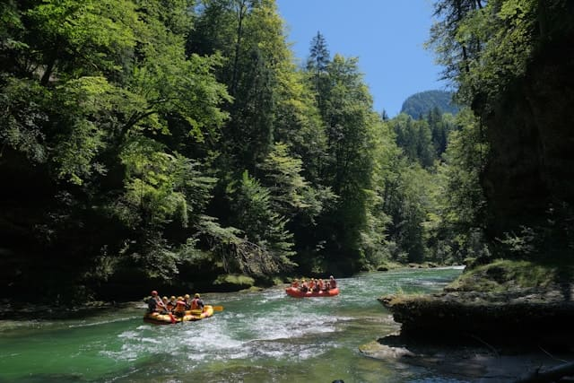

Rafting Tradicional
| Duração | 2 a 3 horas |
|---|---|
| Intensidade | Classes II e III |
| Idade mínima | 10 anos |
| Ideal para | Iniciantes, famílias e grupos |
Nosso passeio mais popular, perfeito para quem deseja experimentar a emoção das corredeiras pela primeira vez.